A table set for the evening.
The products are laid out on one marble table, under one red awning, in the minutes after sunset. Everything is paper cut, perfectly centred and in no hurry. The light makes it warm, not the copy.
The terrace, in four lights
Two procedural paper-cut dioramas, plus two real photographs regraded into blue hour. Each ships as AVIF, WebP and a JPEG fallback, with fixed aspect ratios so nothing shifts while it loads.
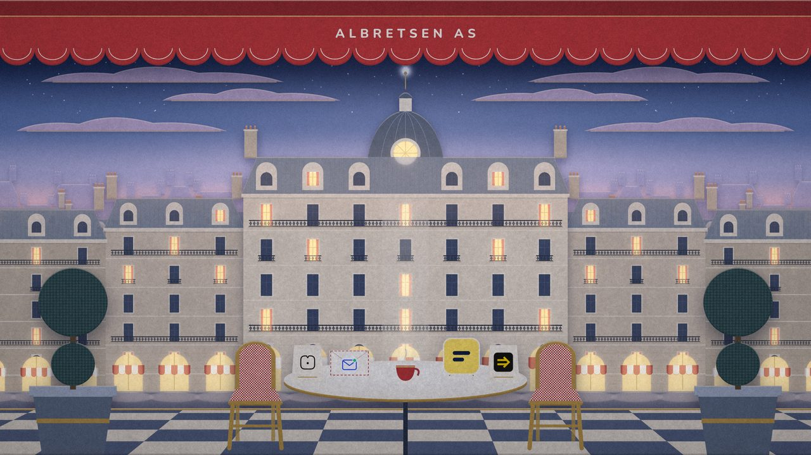
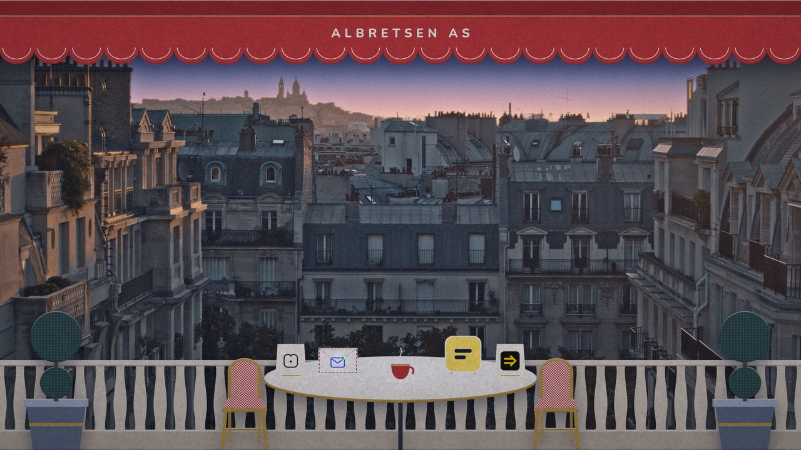
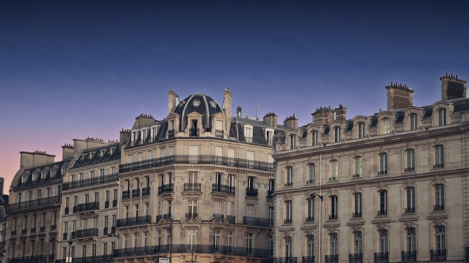
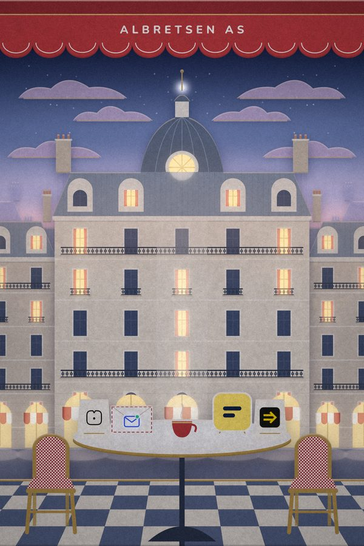
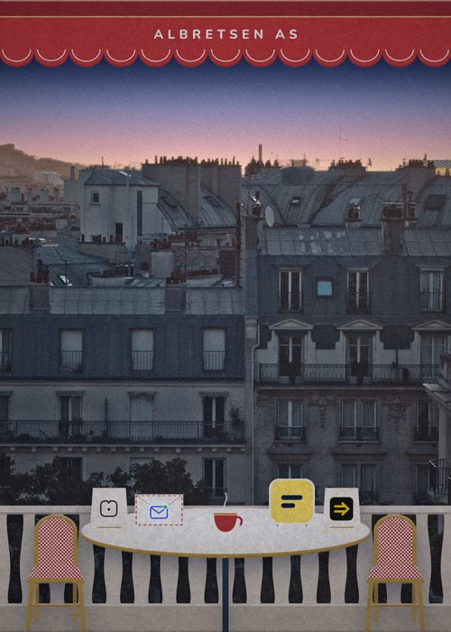
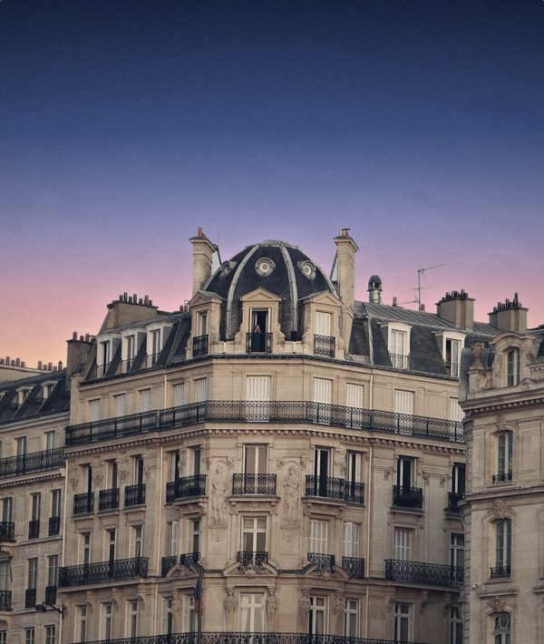
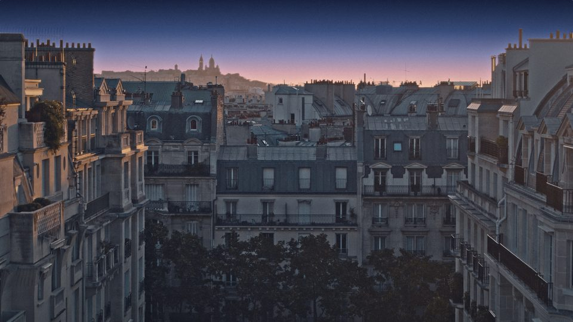
The diorama, standing up
The same nine paper layers on real planes in three.js, lit by one warm key light that casts soft shadows from each sheet onto the one behind it. Move the pointer to dolly the camera a few centimetres. Drag the dial and the Lamplighter turns on the windows, street first and rooftops last.
Zinc, cream, café red, brass, and the sky
The sky runs from Night to Peach horizon, which is the only gradient in the system. Café red is reserved for the awning and one accent per screen. Brass is for rules, rims and the cursor. Lamplight is the only glow.
Nunito, sunny and soft. DM Mono for facts.
A rounded Californian sans (Nunito, variable 200–1000, OFL), set centred with deadpan tracking on labels. Display at 900, body at 500, labels at 800 with +0.32em tracking. DM Mono (OFL) is for commands and figures.
that pays for itself.
Fun Libs has passed 113,000 installs without any marketing. MCP Emails gives AI agents an inbox: 17 tools and about 100 email providers, at $782 MRR. Toolrails is being built and Harbor is paused.
claude mcp add albretsen https://albretsen.no/mcp
A shopfront with the lamp on
The mark is a single storefront drawn on a 64-unit grid, symmetric about its centre line: an awning, an arched window and the evening star. It reads at 16 px.
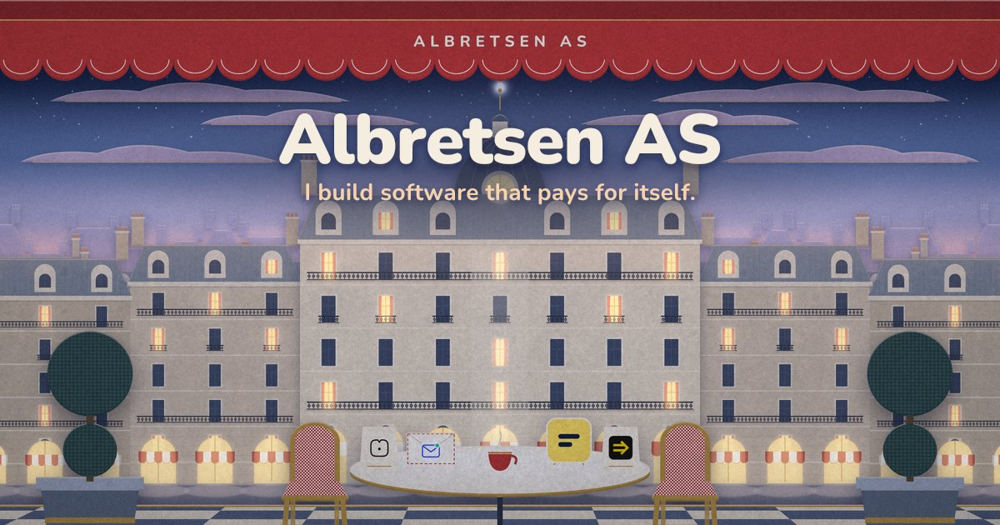
Every product gets a shopfront
Four symmetric storefronts on the same street. Each displays the real product logo, unchanged, in its lit window. Toolrails is still building, so its awning is only half wound out. Harbor is paused, so its shutter is down and only its mark stays lit.
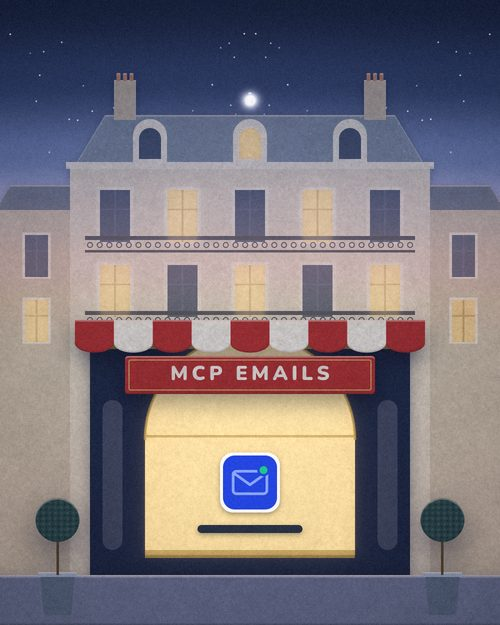
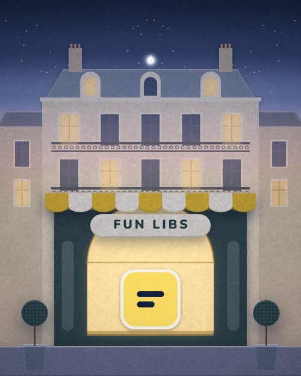
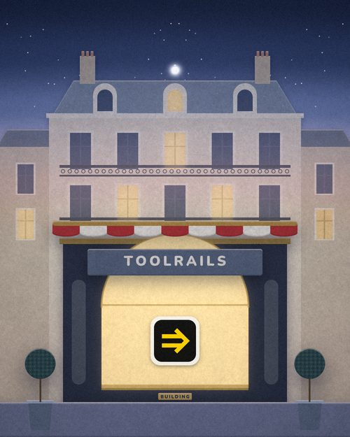
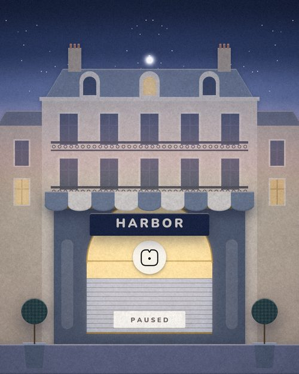
Retired, with postage paid
The retired products become stamps with a straight, deadpan cancellation mark. Luma keeps its real monogram.
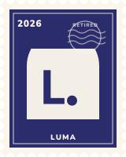
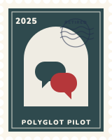
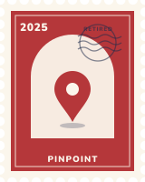
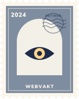
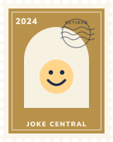
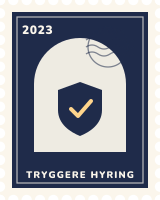
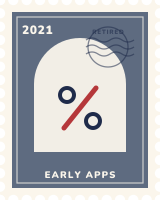
The things on the table
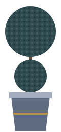
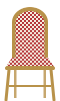
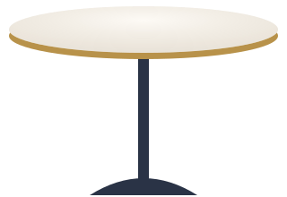
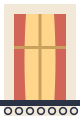
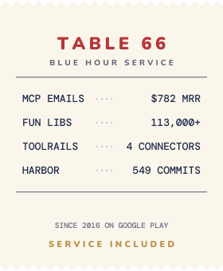
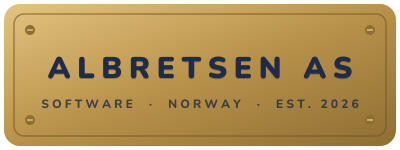
Precise, symmetrical, deadpan
Four signature moves from motion.css and motion.js, plus the Brass Ring cursor, which is active on this whole page. Hover the buttons.
Awning Unfurl
Reveals in 8 cranked steps, then the valance settles once.
Dolly Pan
Mirrored pairs arrive on the centre line on the same frame.
Lamplighter
Windows light in mirrored pairs from the centre, one beat apart.
Pop-up Lift
Paper layers stand up from the page, back to front.